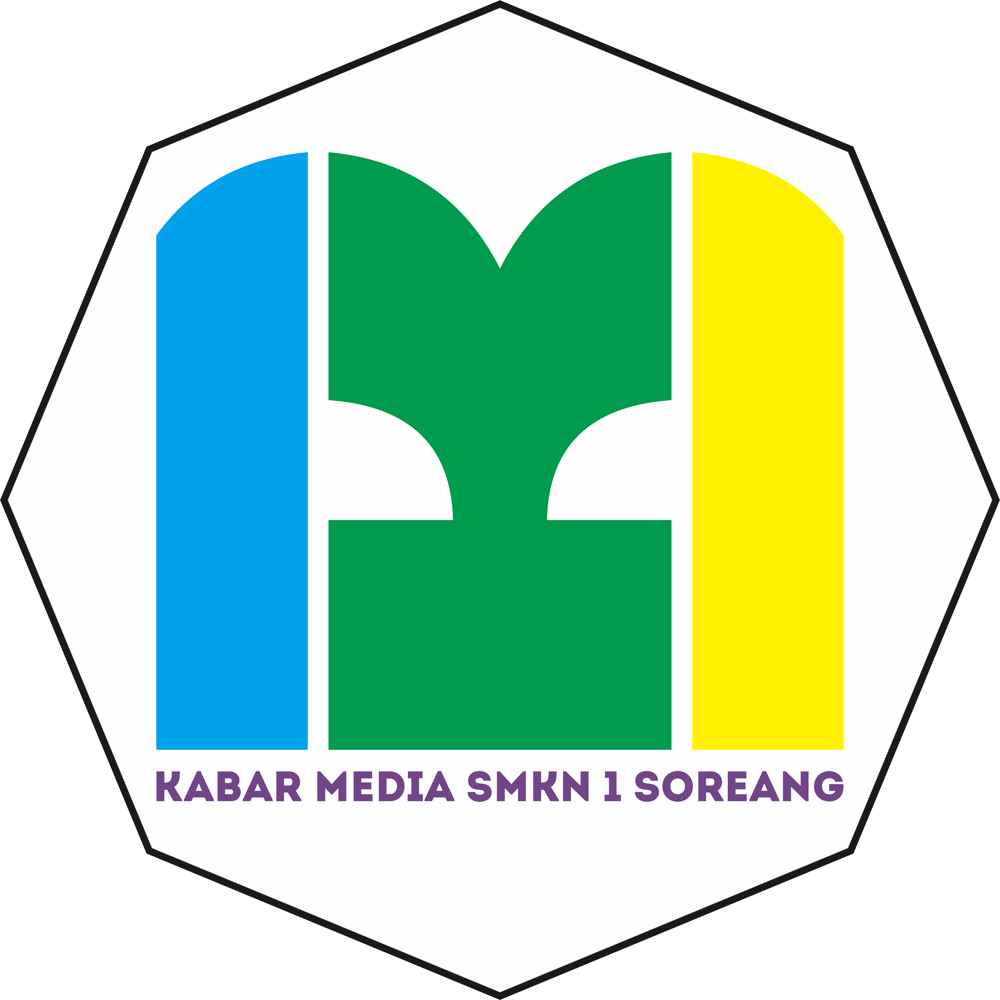

OPEN RECRUITMENT
KABARMEDIA
LOOKING THROUGH LENS
CREATING GREAT DESIGN
CONVEYING POSITIVE INFORMATION
Jurnalistik
Keluarkan bakat Jurnalistikmu! , cari berita yang hype,dan berikan informasi postif yang faktual.
Fotografi & Videografi
Abadikan setiap momen dan belajar menjadi kameranmen handal.
Design & Editing
Keluarkan kreativitas dan ide mu menjadi konten bermutu, kreatif & menjadi konten viral.